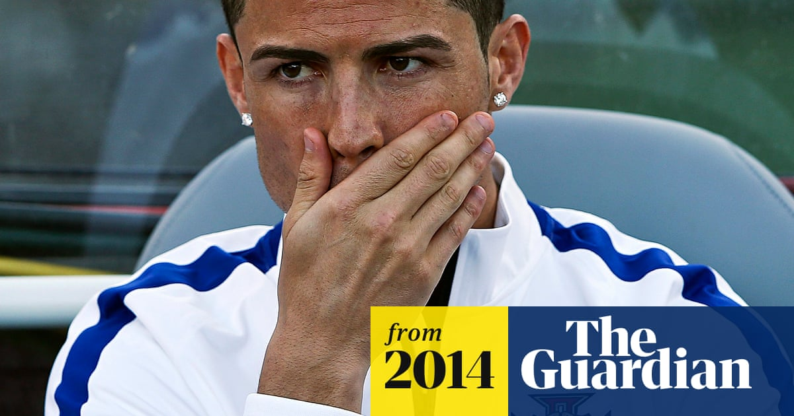

2014 World Cup on One Knee — Out in Groups, in Tears
The decision to play injured: On the eve of the 2014 World Cup in Brazil, Ronaldo was diagnosed with patellar tendinosis, a chronic overuse condition in the knee. Medical experts warned him explicitly not to play, citing the risk of long-term, irreversible damage.
The group-stage exit: Carrying the injury, Ronaldo was nowhere near his best and Portugal went out in the group stage, one of the most disappointing big sides of the tournament. For a heavyweight neighbour of hosts Brazil, the outcome was a devastating blow to Portuguese football and a reality check for Ronaldo.
The training-pitch ice packs: In pre-match training Ronaldo was repeatedly filmed leaving early with ice on his left knee. The footage told the world how serious it was; the pressure to play for his country and a personal taste for heroics won out, and he chose to grit through rather than rest.
The 'don't blame the injury' stubbornness: After the exit Ronaldo publicly insisted 'the injury is no excuse', refusing to attribute the failure to fitness. The stubbornness passes for professional spirit; it also conceals a fact: knowingly playing through a serious injury is itself a tactical and medical miscalculation.
Cruel contrast with Messi: That same year Messi also missed out on a World Cup and spent it racking up club and individual honours; Ronaldo's 2014 closed with injury and an early exit. The contrast in their fortunes made this World Cup one of the darker moments of Ronaldo's career.
Short-term glory versus long-term health: Playing injured may have earned him a fleeting reputation for 'gritty determination'; it may just as easily have overdrawn his career's health reserves. The clash between heroism and scientific decision-making was laid bare at this World Cup.
Verdict: A World Cup to forget — injured, off the pace, out at the group stage. For the critics, further proof of the disconnect between the club Cristiano (unstoppable) and the international Cristiano (inconsistent).